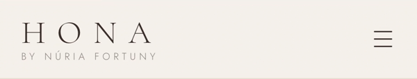
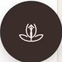

HONABY NÚRIA FORTUNY


01 · Portada
Tu belleza merecetiempo, cuidadoy atención.
Una primera impresión cálida y elegante, con la esencia del centro desde el primer segundo.
02 · Filosofía
Un espacio dondecuidarte es lo másimportante.
Cuenta quiénes sois y cómo trabajáis: atención, higiene y detalle.
03 · Tratamientos
Rituales para tu piel,tus manos y tu bienestar.
Cuidados facialesManicura y pedicuraRituales de bienestarCuidado corporal
04 · La experiencia HONA
Cinco pilaresen cada visita.
Atención personalizadaProfesionalidadCuidado al detalleRelaxConfianza
05 · Confianza
Natura Bissé yopiniones reales.
“Trato excelente y una atención muy cuidada desde que entras hasta que sales.”Opiniones de clientas
06 · Galería
Un vistazoa vuestra calma.
Las fotos del centro y de los tratamientos, en una galería cuidada.
07 · Reserva y contacto
Pedir cita,a un clic.
Formulario de solicitud de cita
Rambla de Jaume I, 35 · Cambrils
08 · Pensada para el móvil
Botones de llamary reservar, siemprea mano.
Cada sección se adapta al teléfono, con la reserva siempre visible.